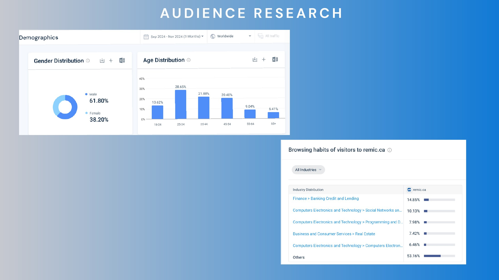

Selected workChoose a project below01—05
Financial education / Paid acquisition
REMIC
Campaign execution and optimization
Connect the right audience with the right next step.
My contributionSearch and Performance Max campaign rebuild, query controls, creative and reporting.
Explore case 2,260 tracked conversions · $35 CPA

Real project materials · open the case for context